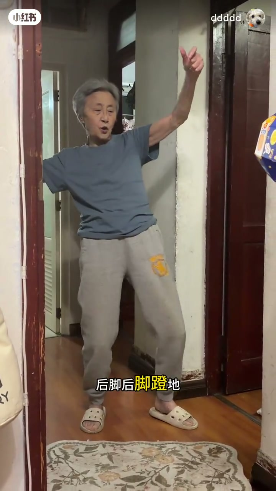
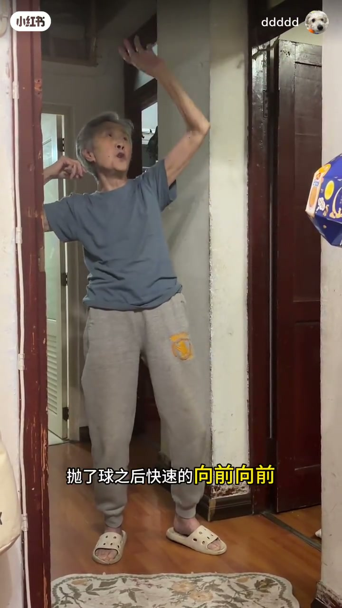
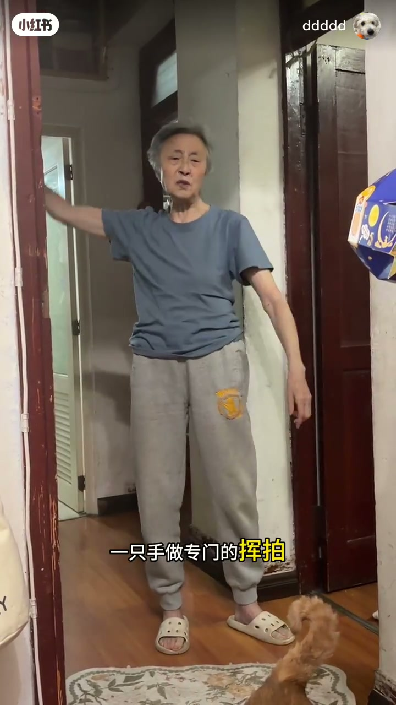
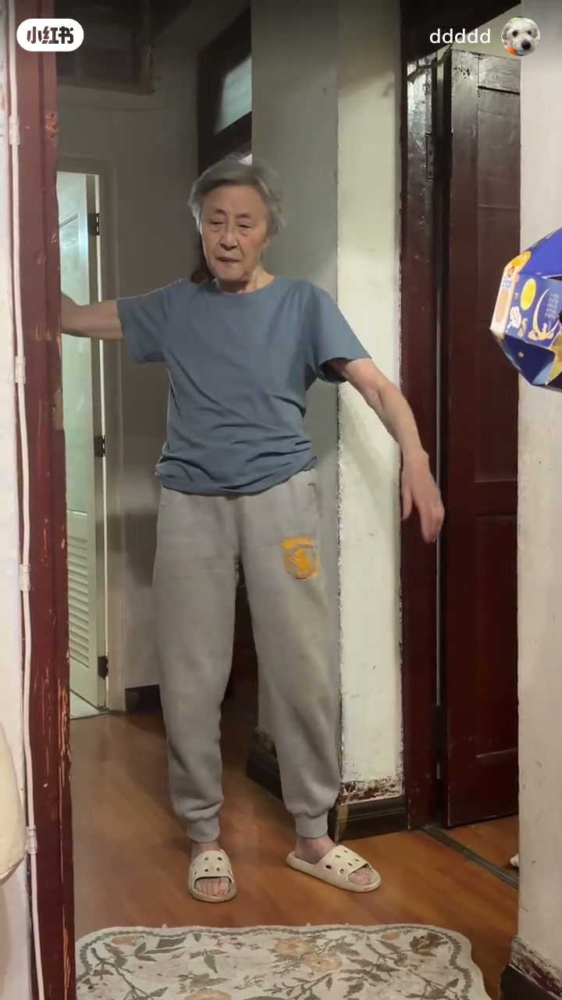
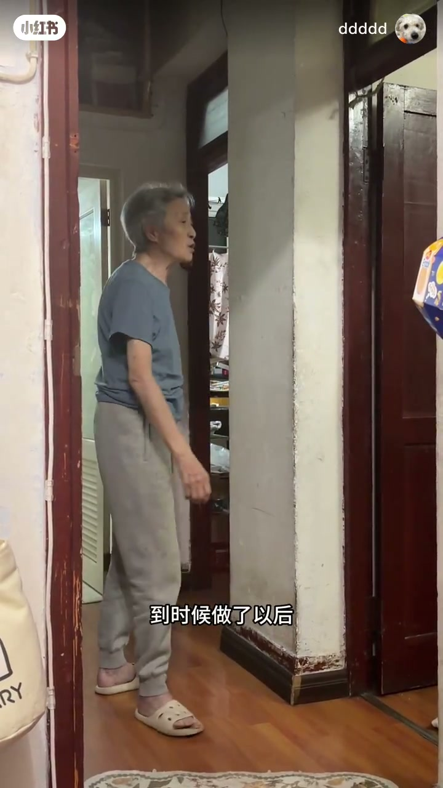
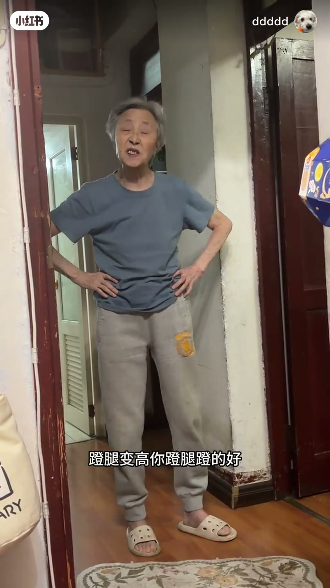

内容要点
知识结构
[00:00→00:40]
准备与抛球
强调重心在后脚，建立发球底座。
[00:40→01:40]
蹬转击球
从后脚负荷转向击球动作链。
[01:40→02:34]
重复巩固
多次重复同一要点，方便跟练。
总结
发球先把重心放在后脚，再谈手臂鞭打。
口播极少；技术细节主要依动作画面观察。
图文实录
口令：重心在后脚
00:00 – 00:40
开场即抛出可跟练的唯一清晰口令：重心在后脚，避免过早压向前脚。
重心在后脚

[00:13]准备：重心放在后脚
Ready position: weight on the back foot

[00:38]抛球阶段：仍保持后脚负荷
Toss phase: keep load on the back foot
完整动作链
00:40 – 01:40
慢看蹬地、转体与击球点，把「后脚重心」嵌入完整发球，而不是孤立站姿。

[01:04]蹬转：由后脚启动传导
Drive and rotate: initiate from the back foot

[01:30]击球瞬间：观察重心转移时机
Contact: watch when weight transfers
多遍重复
01:40 – 02:34
后段多次重复同一发球，便于观众对照自己的重心是否过早前移。

[01:55]重复示范：巩固后脚重心
Repeated demos: lock in back-foot weight

[02:21]随挥收束：完整看一遍节奏
Follow-through close: review the full rhythm